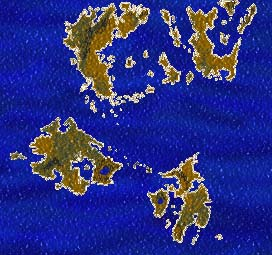
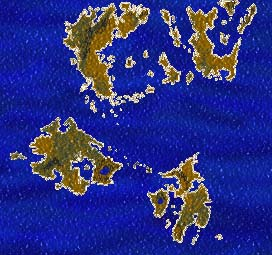
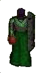

In answer to
the many questions I've been asked about this map, this map was copied from the
original UO web site that used to be at www.owo.com. It was taken around the
time of the pre-alpha. I think Origin's original intention was to have multiple
continents in UO, rather than the same continent on multiple shards. This idea
didn't seem to last very long though.
In answer to
the many questions I've been asked about this map, this map was copied from the
original UO web site that used to be at www.owo.com. It was taken around the
time of the pre-alpha. I think Origin's original intention was to have multiple
continents in UO, rather than the same continent on multiple shards. This idea
didn't seem to last very long though.
Number of times this page has been accessed since 3/11/97
Ultima Online - Shattered Legacy
I have officially left UO,
please read the news item below. These pages are now defunct, however they may
still contain some useful info.
Docmani's Guide to Ultima Online
I am compiled a guide to Ultima
Online using many resources, as well as my own experience. There are many guides
geared towards newbies, other guides that have statistics. This is meant to be a
guide for both old and new players alike. Take a look! Readers are warned some
of this information may be out of date.
News Items (Updated 10/1/98):
- (10/1/98) - Its been real. I went and looked back. April 8, 1996. After
that day, I had such high hopes, however I can honestly say I'm finished. I
haven't played UO in almost three months. I'm just throwing away money at
Origin now. I just officially threw in the towel a few minutes ago. Why? Well,
I just looked at the UO web page. I read about 'the second age'. I read about
all the new stuff and features and things. That alone was enough to make me
cancel. Its been a whole year since the beta test. I don't like where UO has
gone. Its nothing but a glorified chat room now, and the new expansion merely
sounds like more space for houses and more space to hunt. During the beta
test, there was an attempt at a quest engine where people would ask you for
particular items and tell you about people who might have those items. It
never worked quite right, but heck, I could see how a more complicated system
would be alot of fun. They tried putting in other types of quests such as
escort quests etc, however they were all cookie cutter type deals where once
you had done them, they were all the same. They then introduced seers and
other such quests. Again, a good try, however in the year that I have been
playing UO I have seen ONE seer. In a game with thousands online, there would
NEVER be enough to go around. So, we were left to entertain ourselves. And for
a while, I did. Travelling with Morwin, Malekith, Elendar, and Kephrin, I've
had more fun than I've had playing any sort of networked game. It went away
though. Now the UO team seems to be focusing on 'player run towns', 'player
run taverns', etc. I don't mean to bash these things because the people who
run them should be congratulated for putting in the time and the effort.
However, this is not why I got into UO. To me, this is pushing UO to be
nothing but a glorified chat room where you can sit around with 20 other
people, waiting for the orcs in the orc camp to respawn. I was expecting so
much more. However, after talking with my roommate (Morwin) and my friend Tom
(Malekith), I've come to the conclusion that UO will never be the game I've
dreamt of. There is an inherent design flaw. When I play Ultima, my travelling
companions and I are the heroes. In UO there is no way for everyone to be the
hero. There can't be. This isn't meant as some power trip or anything like
that. Look at it this way, in Ultima, when you enter a dungeon, its you vs.
the dungeon. In Ultima Online, there are way too many groups in the dungeon,
to the point where three guys are ganging up on one monster. Add this in with
the fact that there really is no point. In Ultima, you go into the dungeon to
get some item to help you solve your quest. In UO, you go into the dungeon to
'kill monsters' and 'get their stuff'. This is fun for a while, but it gets
old. In any case, I'm finished. I'll be looking forward to Baulder's Gate and
Diablo II, so I may travel with the many friends I made in UO, however I will
be steering clear of large scale games such as UO and Everquest. I don't mean
to bash these games, I'm just saying they aren't for me anymore. I welcome any
comments, however readers are warned that I do no plan on updating these pages
anymore. Good bye and thanks to everyone I have encountered online who made my
playing UO an enjoyable and memorable experience.
- (7/31/98) - Well, I have to admit, UO is finally losing its pull. I
haven't been on in a while. All the other cavaliers seem to be holding the
same opinion. We may try one last thing, however. We might try running a
'Newbie Quest'. Since NONE of us have ever been involved in any Origin event,
the game is getting pretty bland for us. Going around and killing monsters
loses my interest pretty quickly nowadays. So, my two choice are PKing (which
I will never do) and this. We have to come up with a good idea for a quest, as
well as having newbies who wish to actually run through it. It should be fun
(I won't do it unless we get a good idea.....) Anyone who wishes to take part
(either in running the quest or taking part in the quest) should email me,
post on the cavalier's message board, or ICQ me at 8465082. The idea is that
the newbies would start with brand new characters, and be lead through a
series of events and trials which hopefully should get them well started into
the game (as well as keep everyone entertained).
- (7/19/98) - I have a new fan. I got the following email today: "i am 14
and i think all you adults who play the game are losers, i mean dont you have
jobs, games are for children and teens get a life please" It gave me a good
chuckle, so I just had to share!
- (6/29/98) - Well, I passed my oral exam! I can play UO again! Feel's like
I've been away forever. I'll be paying a little more attention to this page.
I'm looking at reorganizing it as well. We are also looking at updating the
Cavalier's web page, making it a bit more snazzy. A few of us are also looking
into starting up the newbie classes again. Maybe even adding some elements to
make them a bit more interesting. More to come, stay tuned!
- (5/18/98) - BTW - I put up a message board for the Skara Brae Cavaliers. If you
have any UO experiences or questions, I would refer people to the new message board. There
should be a few people there that can help you.
- (5/14/98) - Not UO related, but for anyone that pops by this web site
regularly (there are people that do that????), its going to show a significant
lack of updates probably until the end of June. For those that don't know, I
am a PhD student and I will be studying for my PhD oral exam over the next
month or so. When I come back, I should have more time to start up UO newbie
classes again. We'll see.
- (5/7/98) - I read Designer
Dragon's recent philosophical thoughts on UO today. I read it twice just
so I could pick up on what he was trying to say. Now, let me state my opinion
of it (as I often tend to do on this page :). I think 90% of it is crap. I
don't mean to knock the roleplaying towns such as Oasis, who have done a
spectacular job against the odds. However, I think DD is copping out by
attributing the success of Oasis to the design of UO. Please. Oasis is where
it is now because of the hard work of the players who have been FIGHTING the
design of UO, tooth and nail. In his own design document, he talks about
rewarding players for 'good' actions through game mechanics. Right now, its
more advantageous on a personal level to be evil! Most of the castles I've
seen are owned by PKers. I know this because they like to come out and chase
me when they see me walk by. What DD has totally forgotten about is the new
players and the players who like to run around in small groups. I agree, this
is a social game. Running around by myself is boring. However, I have no
interest in creating a town. Its not that I have anything against these player
built towns. Quite the contrary, I have a great amount of respect for them and
the people that run them. However, thats not me. Its not my character. I've
always been self reliant. I like traveling with my group of friends. I like
meeting and helping people. But, I have no desire to build or help to build a
town. I play a different role. I help to save newbies from the game. Its hard
for new players to start. Much harder than when I started. Between PKers,
tough monsters, and an economy that works against new players with low skill,
its tough to start out without help or advice. I help because the game is
inherently unfair to new players in its current form. Someone has to. I don't
do this because of the way DD designed the game. The people who have strived
to build Oasis didn't do it because this is the way DD designed the game. We
did it because its who we are. I'm not asking to be rewarded for this, don't
get me wrong. All I've ever asked for is a level playing field. Right now, the
game in its current for rewards the evil player. Hopefully, the new reputation
system will affect this, however I believe DD is implying that nothing is
wrong with the game, and to that, I disagree.
- (4/22/98) - Ouch! Monsters have gotten tougher. You figure a master
swordsman/GM warrior wouldn't have problems killing a few harpies. Go figure.
The new poison stuff is really annoying. Its not bad enough that you have to
cast cure on yourself every 5 minutes in covetous, but all the poison spamming
is really annoying. Just thought I'd throw a word out. Be careful out there!
They really need to rethink this poison stuff. You can spend a huge amount of
resources just fighting slimes and snakes, and not get anything for your
trouble. Where is the motivation to fight? On another note: Jet Black Dyed
clothes. What is up with this? I've seen people running around in these really
awful looking black clothes. People selling black dye tubs at 400 gp a piece
(which is really funny considering how easy it is to make them)! UO's first
fashion craze! Get a grip people!!! Anyways, I don't care if people want to
run around looking unoriginal (since thats all these people are), but I don't
like the fact that people are selling these dye tubs for so much cash to
unsuspecting characters. If you REALLY feel you need black clothes, download
the hack and do it
yourself, don't waste your money. I am only posting this hack because the
6000% profit people are making off of selling these dye tubs is revolting.
With the hack, you only need one ordinary dye tub and one set of ordinary
dyes. I've tested it and it works. BACKUP YOUR LOGIN.CFG FILE BEFORE USING.
I'm not responsible for anyone who blows up their client in the process of
doing this. I'd advise against using this hack though. There are SOOOOOOOOOO
many people running around with this black clothes on and they look SOOOOO
stupid. I tried it, I put on my black cape and black robe, and promptly took
it off. I'd much rather not look like everyone else. And as for the guilds
that 'require' these clothes, give me a break. Be original okay?
- (4/21/98) - We an interesting tidbit popped up on http://www.uovault.com/ that is noteworthy.
Some guy (Kurtz) claims he caught a regular player (Neil Diamond) using GM
powers (an off duty GM possibly abusing his GM privs...) There is a log and
some screen shots there that I'm not going to bother reposting. If true, its
pretty annoying. The idea that this guy was running around PKing and seemed to
have an extremely high spell resistance, as well as GM mage level (very
difficult, but possible to do legitimately) is shocking. He was supposedly
caught with his invunerable flag on for a brief second, seen walking through
walls, and was able to 'kick' the guy who caught him off UO. I was skeptical,
until this guy's friend Jyrath made a few posts. You see, the most annoying
thing to me, is this guy Jyrath seems to have a nice little house with a
forge. This stock house in UO currently CANNOT have a forge which means it had
to have been placed there by a GM. It is true that other such houses exist,
however this is the first privately owned (non-public) house that I've heard
of. Jyrath has been accused of cheating, alot of people are pissed at him, so
he has posted publicly a few times. Most of these posts seem to confirm: 1) A
GM helped to furnish his house and 2) His buddy did accidentally have his
invunerable flag on and 3) His buddy did in fact kick the accuser off UO by
using his GM powers. He does claim the log posted is doctored though. He
claims the accuser was spamming and yelling which is why he was kicked. I can
believe that. If I had caught these guys, I'd have a few choice words for
them, myself! This isn't the first instance of GM abuse, but it seems to be
the most publicized case of it. Let this be a lesson, keep your screen cap
utilities up, otherwise nobody will believe you. As it is, there are a good
number of people calling these fake. I wasn't sure before, but after reading
Jyrath's posts, I'm leaning towards believing the accuser.
- (4/20/98) - I really haven't updated this in a while! This isn't really a
news item, just something I found was entertaining. I was on this past
weekend, goofing around with one of the cavaliers. Took on a lich, got killed.
My heart almost stopped when I realized the newbie hanging out by my corpse
DIDN'T LOOT IT! I ressed, got my stuff back, finished off the Lich. We then
took our new friend to the bank and helped him out with some shinny new
equipment. I figure this behavior is rare and should be rewarded. :)
Meanwhile, at this bank, I was sitting there waiting for a friend to come
back. This 'blue' guy named Cromwell was running around snooping peoples
packs. He stayed blue because he never stole items. He was just trying to goad
people into attacking him (this is the new thief trick. You can attack those
who steal from you, but not those who snoop). However this trick is easily
countered by simply calling the guards and having them kill the guy for you.
So, he starts looking at my new friend and all the items I just gave him,
listing each one out aloud. I told this genetic defect that he was just being
annoying and he should go away. Of course, he starts swearing at me. Morwin
got in a few slicing blows, which were obviously too advanced for this guy to
even understand. However, we agreed, I had the retort of the day. We had just
called the guards on this guy, he ressed and says, "**** you. I'm just making
a living. We thieves need lives too you know." To which I replied, "I agree
completely. You are in desparate need of a life." I mean, if you're going to
bother getting into a name calling battle with me, please don't leave me such
an open shot! :)
- (3/25/98) - OOps. Haven't updated this in a while. The plan for recall to
consume a rune has been put on hold because of the player outcry. They are
looking for alternatives at this point. On another note, I just wanted to say
that I have had a change of heart in how I play this game. Its been a while in
coming. (Rant mode on) Last night, a friend of mine were wandering along. We
happen upon this Great Lord who was fighting an ettin. We asked if he needed
help. He said, "Not really, but you can help anyways". So, we just gave him a
little fire support. I threw a few spells and RA'd the guy. Morwin (my friend)
shot some arrows. Just as the ettin was about to die, he leaves combat mode
and says, "Your kill". Morwin took him down. As Morwin has yet to reach
'Honorable' level, this was a nice thing for the guy to do. He then says, "The
loot is yours, have fun guys" I though, finally, a nice guy. Good to see.
Meanwhile, there was this 'dishonorable' guy hanging about. He swipes all the
stuff off the ettin corpse and runs. I tracked him, and saw him standing near
a group of people who were preoccupied in a coversation (this guy looked like
he was about to start picking pockets, but I didn't see him actually do this)
So, I do what I always do. I gave the guy a chance to live by simply asking
for the items back. He did what they always do. He ran. Tracked him all the
way across the forest near Yew. And what did he do? He ran through a moongate
and got away scot free. We were pissed. I must now do something I never
thought I would. In cases such as this, I'm going to attack first and ask
questions later. I still give greys and reds the benefit of the doubt. About
10 minutes after that, I helped a grey who was having quite a bit of trouble
with a cow. I healed him, knocked the cow down to 1/4 of its hits, and left.
However, if I have been wronged, or my compatriots have been wronged.... No
warnings. No mercy.
- (3/12/98) - Recall is about to be crippled! The comming soon section
states that recall and gate travel will CONSUME THE RUNE when cast. That means
we will be forced to walk through unpopulated wilderness to get anywhere.
Player killers are going to have a field day with this! They don't venture
deep into the dungeons for fear that they could get double teamed by both
players and monsters. In the wilderness, they won't have any fear of this.
You'll see ambushes everywhere. If you feel this is a bad idea, EMAIL OSI! In
my opinion, this is just a really bad idea. They are forcing this on us
because nobody is wandering through the wilderness. If they reduced the lag in
the wilderness and added some creatures, maybe people wouldn't use recall so
much! They should fix the problems in the game rather than punishing the
players.
- (3/11/98) - More on the lawsuit. PC Gamer has
their own article on the lawsuit. It really opens ones eyes about the level of
greed people have. Most likely, this case will be settled out of court. We,
the players of UO, will most likely get some token offering, and this lawyer,
who is supposedly fighting for our rights, gets a big fat check. Will it solve
lag? Will it have any effect? Origin will probably end up redoing the box to
address the claims in the lawsuit. In other words, nothing substantial. The
only winner in this will be the lawyer. Apparently, he's set up a web page at
http://www.isomedia.com/home/uopleadings/.
However, when I go to that site, nothing comes up but a blank background. If
you view the HTML source, there is something there (nothing substantial). The
guy can't even make decent HTML....
- (3/10/98) - Its official. I guess it had to happen sooner or later. A
group of people have filed a class action lawsuit against Origin Systems. An
article about this can be found here. In
my opinion, its totally bogus and they shouldn't have ground to stand on.
However, it seems that class action lawsuit by AOL users was on similar
grounds and that one DID manage to succeed. Is this the begining of the end
for UO? Stay tuned. I'll be following this and posting any official
information here. There are lots of rumors floating around. This article and a
post by Designer Dragon saying he is not allowed to comment on pending
litigation are the only official pieces of news. The rumor that OSI is going
to hold off implementing bug fixes is JUST A RUMOR. The only thing that may
happen is DD and others from the design team may be forbidden from posting on
the various chat boards around, while the lawsuit is going on.
- (3/3/98) - Blue PKs seem to be everyone. These are guys who circumvent the
current noteriety system to kill and loot players. Their favorite technique
seems to be using blade spirits and trapping you in a corner (use of blade
spirits does not affect their noteriety). I've also seen a couple blues cast
summon demon and transfer control of the demon to a red. Be warned. I have
seen more blue PKs than red PKs in the past week alone. Its is only going to
get worse, until the new noteriety system goes into place. As soon as any of
these guys loots a corpse they are fair game, in the new system. Until then,
watch your back. Another thing to watch for now is thieves working in groups.
My friend had some items stolen from him last night. He was hidden. The game
did not tell him that he had been detected, either. The guy stole an item from
him, and handed it to his buddy before we had a chance to call the guards. Why
do people need to use these loopholes? Why can't they just play the game as it
was meant to be played?
Click here to see old
news
My Plans for UO
My friends and I are brewing up some plans. We're
working on a web page. Take a
minute and visit it. I'll be updating these pages fairly frequently once my
fellow cavaliers have signed on to the game! I'm currently toying with the idea
of putting together an
adventuring party on the Chesapeake shard, for anyone interested. I'll still
be putting up journals every so often, highlighting interesting events, however
since anyone can now play UO, I really won't be doing a daily journal.
For more fun, go see the Official Ultima Online Web Site
This includes
all sorts of information about Ultima Online. Skills, spells, weapons, and all
sorts of other fun. Take a look!
Some Thoughts on UO currently
UO is finally at the point where it is
tough! I mean really tough. However, I'm concerned that newbies are going to
have problems starting out. My only advice at this point is FIND FRIENDS. A
newbie cannot go out adventuring alone. I'm an adept swordsman (84 Sword/50
Tactics) and I'm getting ROCKED by monsters when I'm by myself. Be careful out
there. You might want to save up some money have find some of the player run
magic item shops.
My Journals
Docmani's
Adventures on the Chesapeake Shard (Last Updated: 10/29/97)
Docmani's
Journal for the Phase I Beta Test (Last Updated: 6/22/97)
Docmani's
Journal for the Phase II Beta Test

Docmani's
Journal from the first pre-alpha test (includes screen shots!)
Docmani's
Journal from the second pre-alpha test (Dated: May 13th, 1996)
My Opinions of the Game (way back during the pre-alpha.... very dated
material)
My first
comment sheet sent to Origin
My second comment
sheet sent to Origin
My bug report sent to
Origin
Related Pages
Please don't ask me to put your link here. I've had alot of requests
for this. I don't want this to become a link page, and I will most likely refuse
all requests.
Ultima Online Home Page
My Regular Home Page
The Unofficial Ultima Online Chat
Zone
John's Ultima Online Page / docmani@glue.umd.edu
Last and final update 10/1/98
Origin Systems Inc. is in no way responsible for the content on this web page
All information here which does not originate from Origin Systems Inc, is
copyrighted by me. This includes the screenshots and all text. If you would like
to use any material on this web page (such as Next-Generation magazine did in
their article on Ultima Online), please email me, and ask for permission. I'm
usually very good about such things!